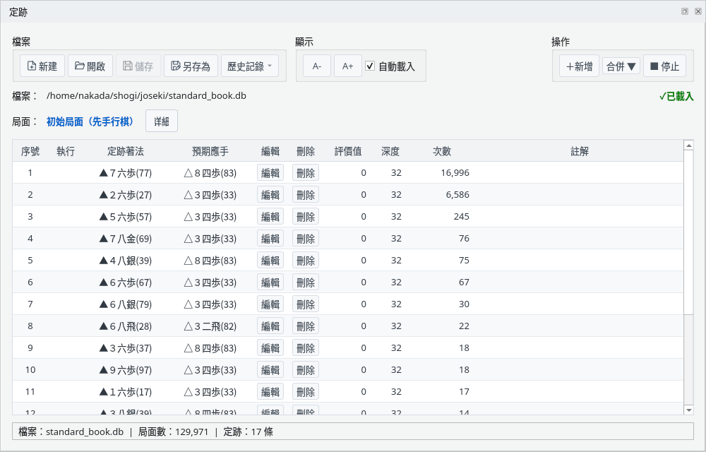
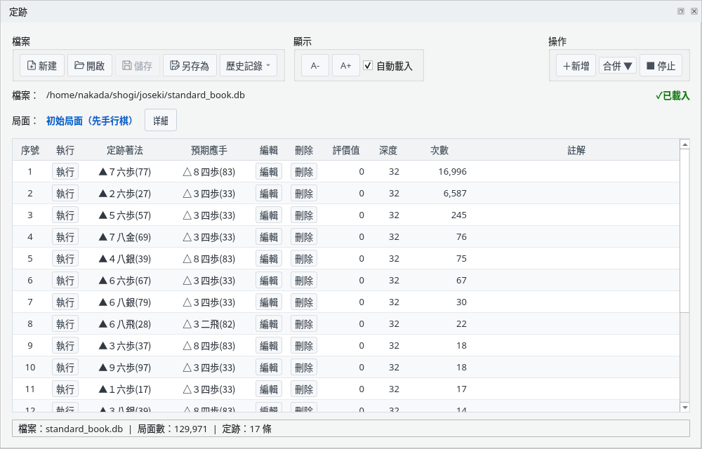
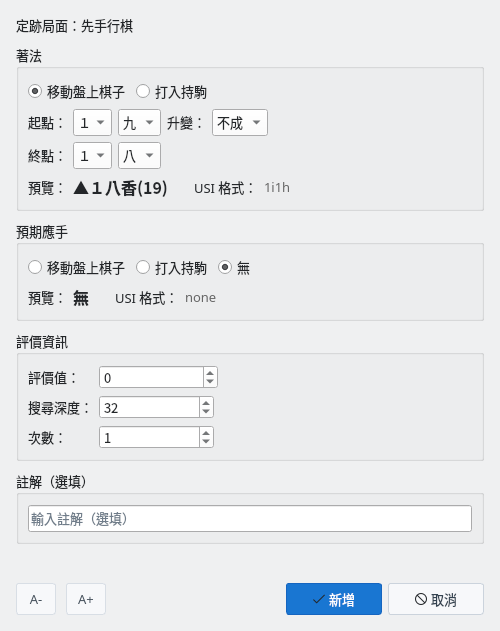
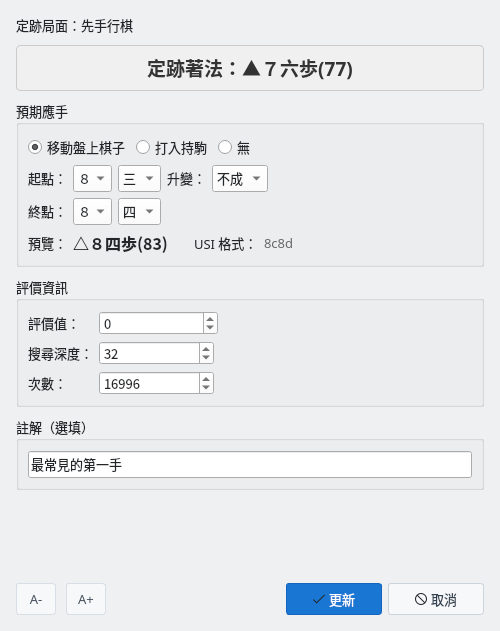
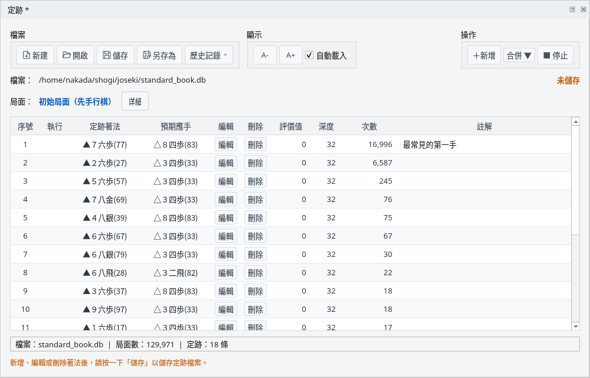
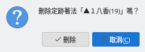
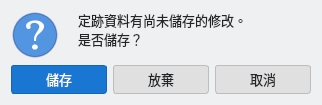
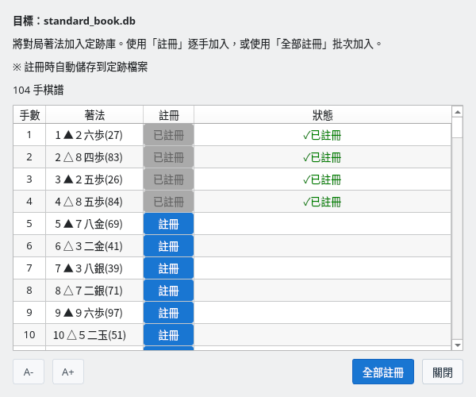

查看與編輯 YaneuraOu 格式的定跡檔案
截圖於 Linux 上以繁體中文介面擷取。
在定跡視窗開啟定跡檔案，查看目前局面的定跡著法
選擇「檢視」→「定跡」顯示定跡視窗。一開始它位於主視窗下方的分頁中。表格較窄時，可以放大面板或讓它成為獨立視窗（參見面板佈局指南）。
按一下「開啟」，選擇 YaneuraOu 格式（#YANEURAOU-DB2016）的定跡檔案（.db），例如 YaneuraOu 附帶的 standard_book.db。按一下「新建」可以建立空的定跡，「歷史記錄」可以開啟最近使用的檔案。勾選「自動載入」後，下次顯示定跡視窗時會自動讀取上次的檔案。

定跡視窗：開啟 standard_book.db 時的初始局面
目前局面登記的定跡著法依檔案中的順序排列。
在棋譜欄選擇著法或對局推進時，會切換為該局面的定跡著法。不區分手數，相同局面總是顯示相同的定跡著法。
按一下「詳細」可顯示局面與定跡的 SFEN。「■ 停止」暫停定跡顯示，「▶ 恢復」重新顯示。最下方一行顯示檔名、局面數與目前局面的定跡著法數。未開啟定跡檔案或該局面沒有定跡時，表格中會顯示提示。
對局中輪到自己時，可以直接執行定跡著法
對局中輪到自己時，「執行」欄會顯示按鈕。按一下按鈕或按兩下該行即可執行該定跡著法（升變與否也依照定跡）。執行的著法與在棋盤上走的著法一樣記錄在棋譜中。
輪到引擎時、引擎之間的對局中以及未對局時，「執行」欄為空，無法執行定跡著法。

對局中：輪到自己時可用「執行」按鈕走定跡著法
新增、編輯、刪除定跡著法，並儲存到定跡檔案
按一下「＋新增」為目前局面新增定跡著法。選擇「移動盤上棋子」或「打入持駒」，指定起點與終點，並透過預覽確認。預期應手也可以選擇「無」。
輸入的著法在該局面不能走時，無法按下「新增」。已登記相同著法時，會確認是否覆寫。

新增定跡著法：透過預覽確認著法後新增
按一下「編輯」可以修改預期應手、評價值、搜尋深度、次數與註解（著法本身不能修改）。在表格的行上按右鍵，還可以使用執行、編輯、刪除與複製著法的選單。
修改後，檔名右側會顯示「未儲存」與提示儲存的說明。

編輯定跡著法：修改評價值、搜尋深度、次數與註解

編輯後：顯示註解、「未儲存」與儲存提示
按一下「刪除」會顯示確認，確認後刪除該定跡著法。
使用「儲存」（覆寫）或「另存為」把修改寫入定跡檔案。有未儲存的修改時，透過「新建」「開啟」「歷史記錄」切換檔案，或關閉定跡視窗、應用程式時，會確認是否儲存。

刪除確認

有未儲存修改時的確認
把棋譜中的著法一併登記到定跡
選擇「合併 ▼」→「從目前棋譜」或「從棋譜檔案」（KIF 格式），會列出棋譜主線的著法（先手與後手）。「註冊」逐手登記，「全部註冊」一次全部登記。
新的著法以無預期應手、評價值 0、深度 0、次數 1 登記；已有的著法次數加 1。登記後會立即儲存到定跡檔案（其他未儲存的修改也會一併儲存）。尚未儲存的新定跡需要先指定儲存位置。「✓已註冊」表示開啟該檔案後登記的著法。

合併：逐手或一次全部登記棋譜的著法